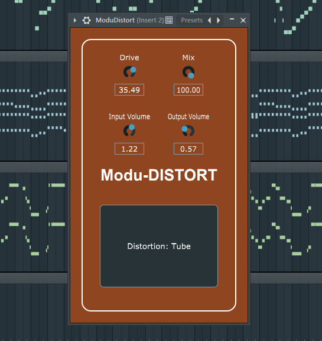

Modu-DISTORT - Versatile Audio Distortion Plugin

Features
- Multiple Distortion Types: Includes Tube, Soft Clip, Hard Clip, and Fuzz.
- Drive Control: Adjusts the intensity of the distortion effect.
- Mix Control: Blends the processed signal with the original.
- Input and Output Volume Controls: Separate controls for optimum signal levels.
- Intuitive Interface: User-friendly interface with clear labeling.
- Stereo Processing: Capable of processing stereo signals.
System Requirements
Compatible with most DAWs (Digital Audio Workstations) supporting VST, AU, and other common plugin formats.
Installation
- Download the plugin from the provided link.
- Extract the downloaded file to C:Program_Files/Common_files/VST3.
- Follow your DAW's instructions for adding and scanning new plugins.
- Locate ModuDistort in your DAW's plugin list and add it to a track.
Usage
Tips for Best Results
License
This plugin is distributed under the Apache License 2.0.